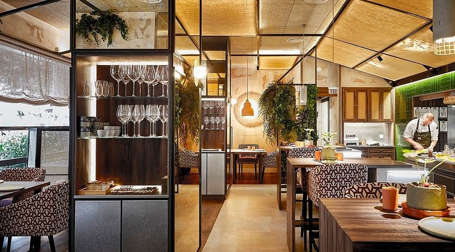
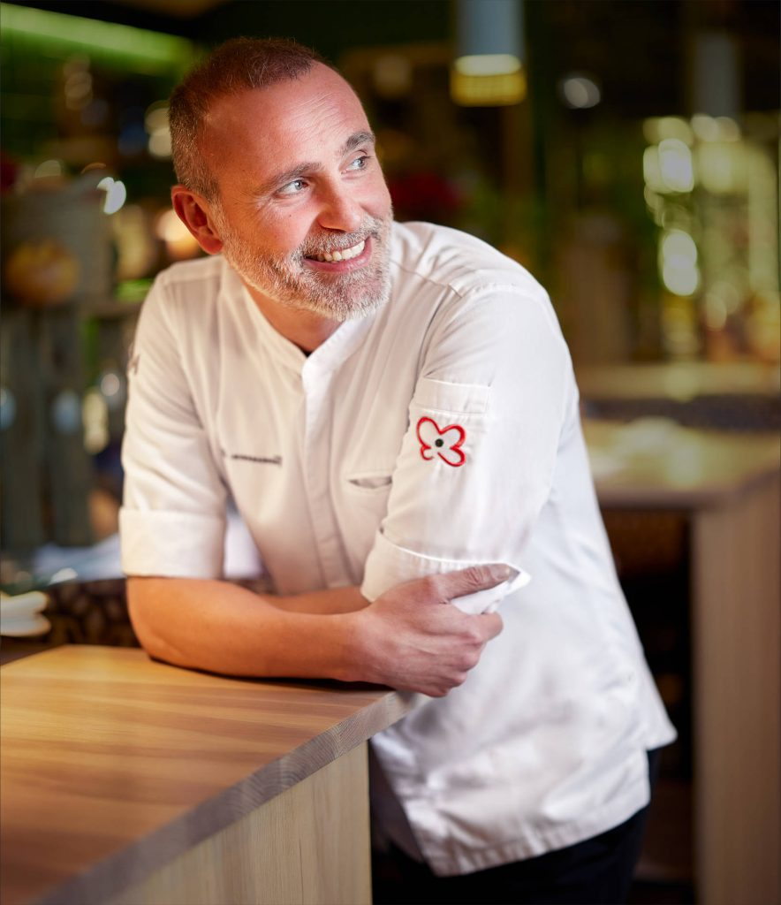
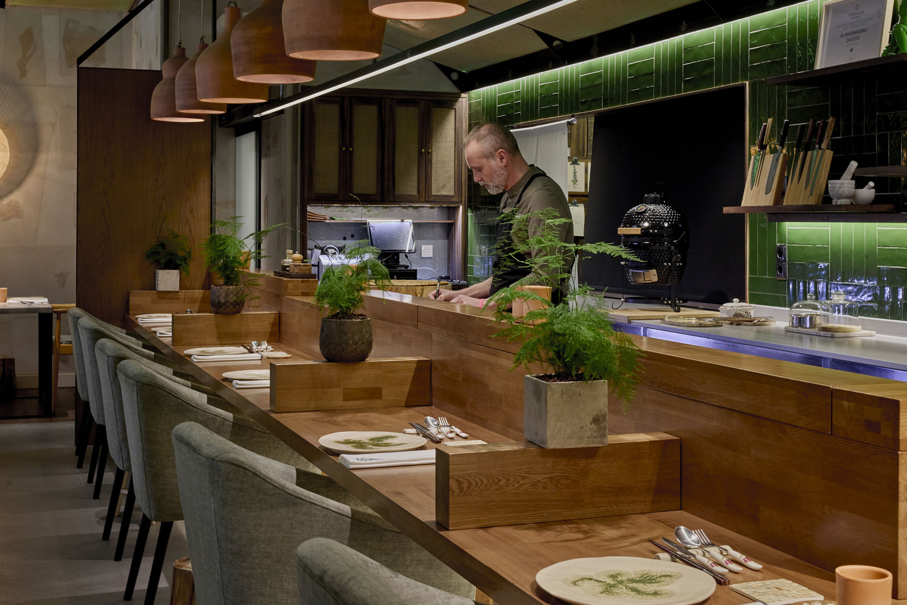

Vegetalia
Degustación de vegetales y hongos de temporada. Opción vegetariana o vegana.
Ver detalleRestaurante · Rodrigo de la Calle
La naturaleza vegetal como pilar. Verduras, hortalizas y hongos de temporada llevados a su máxima expresión.
Quiénes somos
La naturaleza vegetal es el pilar fundamental de nuestra cocina. Respetamos el producto, aceptamos su temporalidad y nos dejamos llevar por los ciclos de las estaciones para obtener su máxima expresión.
Alta cocina verde, recuperación de especies vegetales y respeto al entorno son la base de nuestra propuesta. El Invernadero es un restaurante omnívoro donde la proteína animal participa como aderezo. Ofrecemos opciones sin gluten, para diabéticos y alérgenos en general; y un menú especial sin proteína animal para quienes siguen una dieta vegetariana o vegana.


El chef
Pionero de la gastrobotánica: la disciplina que estudia y cocina el mundo vegetal con rigor y libertad. Una cocina de alto nivel que, lejos de la distancia, te trata como a alguien que ama comer y quiere descubrir algo nuevo.
Aquí no hay lujo distante. Hay producto, oficio y la curiosidad de quien lleva años recuperando especies y empujando los límites de lo verde.
rodrigodelacalle.esLos menús
Dos degustaciones, vegetal y omnívora. Cada una, también en versión Experience con todo incluido.
Degustación de vegetales y hongos de temporada. Opción vegetariana o vegana.
Ver detalleVegetalia con maridaje, agua, pan, quesos e infusiones.
Ver detalleVegetales, carnes ecológicas, pescado y marisco. Para omnívoros.
Ver detalleGastrobotánica con maridaje, agua, pan, quesos e infusiones.
Ver detalleTodos los comensales de la mesa toman el mismo menú. Indícanos cualquier alergia o restricción al reservar.
La joya de la casa
Junto a la cocina abierta. Un omakase en directo: el chef cocina y emplata cada plato delante de ti, con la charla y la cercanía como parte del menú.
Mesa compartida de 1 a 10 comensales, con separación entre reservas. La experiencia más distintiva de El Invernadero.
Conoce la experiencia
Abierto martes a sábado
C/ de Ponzano, 85 · Chamberí, Madrid · Almuerzos 14:00 (sáb. y festivos) · Cenas 19:00 y 21:30